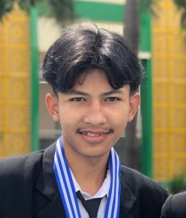

Universitas Pamulang
Universitas Pamulang, Fakultas Ekonomi dan BIsnis Program Studi Manajemen, Sejak Tahun 2025.
HALAMAN BIOGRAFI PRIBADI
Halo, saya
Selamat datang di ruang cerita saya. Sebuah halaman sederhana untuk mengenal perjalanan, kepribadian, dan kisah hidup saya.
Kenali saya ↓
Nama saya Aezi Yuda Asyifa. Saya adalah pribadi yang terus belajar, berkembang, dan berusaha menjadi versi terbaik dari diri sendiri.
Dalam perjalanan hidup, saya percaya bahwa setiap pengalaman—baik hal menyenangkan maupun tantangan—memiliki pelajaran berharga. Saya senang mengenal hal-hal baru, membangun hubungan baik dengan orang lain, dan terus memperluas wawasan.
Halaman ini menjadi tempat untuk memperkenalkan diri dan berbagi sedikit cerita tentang perjalanan hidup saya.
— Aezi Yuda AsyifaPendidikan adalah bagian dari proses untuk tumbuh, mengenal kemampuan diri, dan meraih cita-cita.
Universitas Pamulang, Fakultas Ekonomi dan BIsnis Program Studi Manajemen, Sejak Tahun 2025.
Menempuh Pendidikan di MAN 3 Cirebon Sejak Tahun 2022.
Bagian ini menceritakan sisi personal, hal yang disukai, dan nilai-nilai yang penting dalam kehidupan.
Mempunyai sifat yang pendiam, Berkarakter baik, dan suka melakukan hal-hal yang baik.
Mempunyai hobi suka membaca, aktivitas favorit yang sering dilakukan itu membaca buku berbahasa arab, olahraga yang disukai adalah sepak bola.
Tujuan atau pencapaian untuk di masa depan adalah membangun usaha sendiri.
Terus bertumbuh, karena setiap hari adalah kesempatan untuk menjadi lebih baik.SEBUAH PENGINGAT UNTUK DIRI SENDIRI